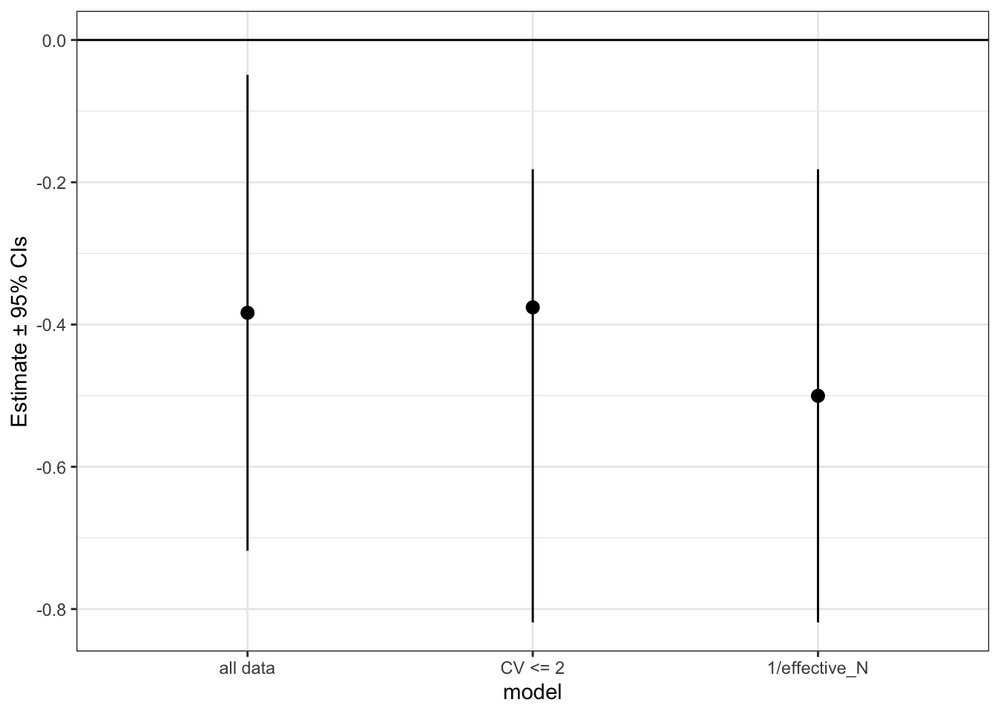
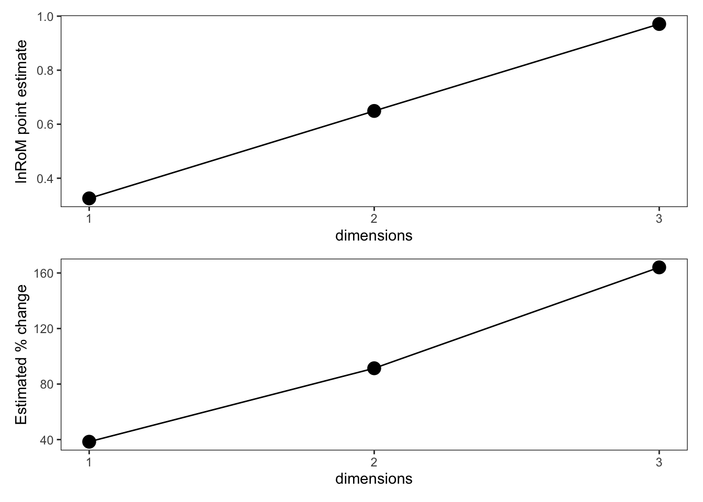
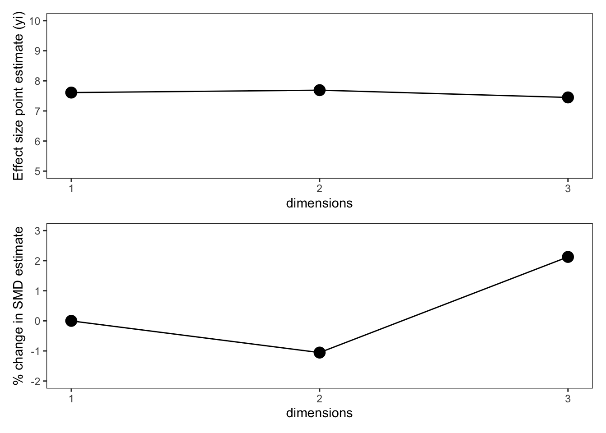
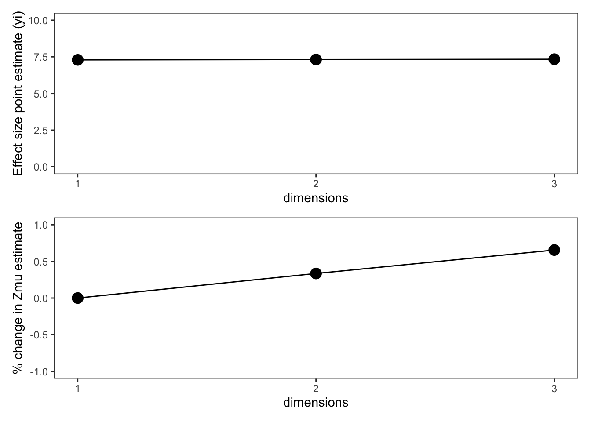

# Demonstrate in R...Effect size assumptions
XXXX
We’ll here give an overview of the main effect sizes covered in this tutorial. As you may have noticed, there are sometimes several effect size options for the same study designs. These effect sizes differ in their statistical assumptions and in their interpretation. Let’s start with the most commonly used category of effect sizes in ecology and conservation: effect sizes for comparing continuous outcomes between two discrete groups.
Discrete groups with continuous outcomes (SMD/lnRoM/Zmu)
This is among the most common class of effect sizes used in ecology and evolution. These effect sizes compare the mean±error of a continuous predictor measured for two groups, such an experiment and control group. These effect sizes require the following statistics: 1) means for the treatment and control groups (henceforth m_1 and m_2) 2) standard deviation for the two groups (sd_1, sd_2); and 3) sample size for each group (n_1, n_2).
ImportantMeasurements of error/variance
The effect sizes in this section require standard deviation (\(sd\)) for the treatment and control groups. \(sd\) is fundamentally distinct from standard error (\(se\)). Some meta-analyses have mistaken the two, with egregious results. Be sure to convert all measurements of error to \(sd\). Other commonly reported forms of error include 95% confidence intervals (or 90%), variance, and interquartile ranges (e.g., in boxplots). The extraction package metaDigitise() automatically converts \(SE\), interquartile ranges, and 95% CIs to \(SD\).
Just to remind you, here are the relationships between these measurements of error: \[\begin{aligned} &SD = SE * \sqrt{n}\\ &SD = sqrt(Var)\\ &SD = \frac{CI_{upper} - CI_{lower}}{2*1.96} * \sqrt{n} \end{aligned}\]
Differences between SMD, lnRoM, and Zmu
There are some important differences between SMD, lnRoM, Zmu, which we summarize here. Don’t stress about understanding all of these topics, we’ll go through each one and can hopefully provide practical guidance on choosing the appropriate effect size for your meta-analysis.
| SMD | lnRoM | Zmu | |
|---|---|---|---|
| Accepts values ≤ 0 | yes | no | no |
| Robust to overdispersion | no? | no | no |
| Robust to heteroscedasticity | yes | ? | ? |
| Robust to dimensionality | somewhat | no | yes |
| Paired design formulation | yes | yes | yes |
| Accepts before-after-control-impact designs | yes | no | no |
| Can be converted to % change | no | yes | ??? |
While we want to keep this tutorial light on equations, we’ll briefly give some historic background on the development and math of these effect sizes, which influence the differences in the table above. We’ll only look at the point estimator formulas here (see Appendix for variance estimator formulas).
SMD, also known as Hedges’ g, is the bias-corrected version of Cohen’s d. With \(sd\), \(m\), and \(n\) the standard deviation, mean, and sample size of the extracted data for groups 1 and 2, Cohen’s d is defined as:
\[\begin{aligned} &d = \frac{m1-m2}{SD_{pooled}} \end{aligned}\]
\(SD_{pooled}\) is: \[SD_{pooled} = \sqrt{\frac{sd_1^2 (n_1 - 1) + sd_2^2 (n_2 - 1)}{n_1 + n_2 - 2}}\\\]
Cohen’s d is an estimator of SMD and can be biased at low sample size. For that reason, Hedges (REF) did some fancy math to create a small-sample size bias correction (\(J\)), which approaches 0 as total \(n\) increases. This formulation is known as Hedges’ g and is the primary estimator of SMD.
\[\begin{aligned} &J = 1-\frac{3}{4*(n_1 + n_2 - 2) - 1}\\ &d = \frac{m1-m2}{SD_{pooled}}\\ &g = J * d \end{aligned}\] The main take away from these formulas is that the point estimate (both \(d\) and \(g\)) are influenced by standard deviation. Observations with high standard deviation will have a lower overall point estimate. Because this can reduce power, Hedges and Gurevitch later proposed the log-transformed ratio of means, the most widely used effect size in ecology (ref). This does not have standard deviation in the point estimate:
\[lnRoM = log(\frac{m1}{m2})\] The lnRoM point estimate is thus robust to the standard deviation of the data. However, because this definition formula is still prone to bias with low sample size, bias correction again introduces issues with dispersion because the correction term includes standard deviation:
(Shinichi?) — but it sounds like we don’t generally use lnRoM_BC because of this? Escalc defaults to the first-order formula?
\[lnRoM_{BC} = log(\frac{m1}{m2}) + 0.5 * \frac{sd_1^2}{n_1 * m_1^2}-\frac{sd_2^2}{n_2 * m_2^2}\] Because standard deviation is in this bias-corrected estimator, this estimator can be wildly biased when data is overdispersed.
However, there is another more pernicious and underappreciated problem with both formulations of lnRoM-the point estimates double for every added dimension in the underlying datasets (see (sec?) below where we simulate this).
For that reason, Nakagawa (ref) recently proposed the \(Z_{mu}\) statistic, which is dimensionfree and assumes a lognormal reality. Zmu requires converting the observed summary statistics (\(m\) and \(sd\)) to their lognormal flavors. The math to do so is quite long, so we’ll spare you the details. However, once \(sd_{ln}\) and \(m_{ln}\) have been calculated for each group, Zmu is calculated as follows:
\[\begin{aligned} &S_{ln} = \sqrt{sd_{ln1}^2 + sd_{ln2}^2}\\ &Z_{mu} = \frac{m_{ln1} - m_{ln2}}{S_{ln}} \end{aligned}\]
This effect size is robust to dimensionality (see (sec?)) but, like SMD and the bias-corrected lnRoM estimator, it is sensitive to overdispersion. If you were scared by the complex math we alluded to, don’t ya worry, it’s in our eff_this function.
Heteroscedasticity
Heteroscedasticity (i.e., differences in variance between the experimental groups) can bias effect sizes considerably. SMD has a special formulation (Bonnett 2008) that accounts for heteroscedasticity. This is available as the measure ‘SMDH’ in metafor::escalc.
Does heteroscedasticity matter for lnRoM or Zmu? I have no idea.
Rules of thumb for heteroscedasticity. Ratio of CV1 to CV2? What threshold?
Overdispersion
SMD and lnRoM assume that the underlying data generation process is normal. Zmu assumes a lognormal reality. Both of these assumptions can be broken if the data is overdispersed—which is remarkably common in ecology and evolution, especially with abundance data. This can be a real problem, leading to grossly biased point estimates and sampling variance.
Given that there are yet no appropriate effect sizes for overdispersed data, the appropriate way to handle this data is to conduct sensitivity tests both with the full dataset and with overdispersed effect sizes excluded. As you’ll see throughout this tutorial, sensitivity tests are the annoying reality of meta-analysis.
Testing for overdispersion should be part of your analytic workflow (?@sec-workflow). The easiest way to test for overdispersion is to calculate the coefficient of variation (\(CV\)) for your control and treatment groups. \(CV\) is the ratio of standard deviation to the mean (\(sd/x\)).
We consider a \(CV>2\) to be indicative of overdispersion. However, for lnRoM*, Lajeunesse 2015 Ecology (ref) suggested a small sample-size corrected threshold based on the standardized mean, derived from the Geary test (ref). Let \(m\) be the group mean, \(sd\) be the standard deviation and \(n\) be your group sample size:
**Reading Lajeunesse it looks like the standardized mean was proposed for SMD too, prior to development of lnRoM*
\[G' = \frac{m}{sd}*\frac{4*n^{3/2}}{1+4*n}\] There are several suggested thresholds for this value that can be used to exclude potentially overdispersed and problematic data. Geary and Lajuennesse suggested excluding values \(\ge3\) , while others have suggested more conservative thresholds such as \(\ge11.11\) (Hayya et al 1975), \(\ge10\) (Kuethe et al. 2000), and \(\ge4\) (Marsaglia 2006).
Let’s do this in R but with both a CV threshold and the Geary-Lajuennesse threshold, using a dataset provided by the metafor package:
[1] 61.53846It looks like 61% of this dataset is overdispersed. This could be problematic.
[1] 76.92308# Hah, that's all the data....It looks like all the data in this meta-analysis fails the Geary-Lajuennesse test. So what do you do if that happens? In this case, we’ll use \(CV\), instead of the Geary_Lajuennesse test, to filter out overdispersed values and rerun our models.
An alternative approach is to use the inverse of effective sample size as your meta-analytic model weight, instead of sampling variance. This is a method that produces reasonable meta-analytic estimates, despite ignoring standard deviation (Nakagawa et al. XXXX).
(Shinichi?)–Is this only for lnRoM???
Effective sample size is defined as: \[N_{0} = \frac{4n_1n_2}{n_1 + n_2}\\\] Let’s go through a full example, with lnRoM as our effect size.
# First calculate effect sizes (and sampling variance):
dat <- escalc(measure = "ROM",
m1i = m1i, m2i = m2i,
sd1i = sd1i, sd2i = sd2i,
n1i = n1i, n2i = n2i,
data = dat, append = TRUE) |>
setDT()
head(dat) author year n1i m1i sd1i n2i m2i sd2i ai bi ci
<char> <int> <int> <num> <num> <int> <num> <num> <int> <int> <int>
1: Cote 1997 50 2.20 12.73 54 5.20 12.50 NA NA NA
2: Ghosh 1998 140 17.60 24.20 136 34.10 38.80 NA NA NA
3: Hayward 1996 23 0.38 0.56 19 0.23 0.29 NA NA NA
4: Heard 1999 97 2.09 5.93 94 2.66 4.95 34 63 36
5: Ignacio-Garcia 1995 35 4.92 6.05 35 20.00 26.34 24 11 29
6: Knoell 1998 45 0.85 4.75 55 2.31 9.16 NA NA NA
di type cv1 cv2 gl1 gl2 yi vi
<int> <int> <num> <num> <num> <num> <num> <num>
1: NA 1 5.786364 2.403846 1.215943 3.042876 -0.8602013 0.77664890
2: NA 1 1.375000 1.137830 8.589868 10.230445 -0.6613985 0.02302400
3: NA 1 1.473684 1.260870 3.219322 3.412161 0.5020919 0.17809697
4: 58 1 2.837321 1.860902 3.462259 5.196212 -0.2411621 0.11983366
5: 6 1 1.229675 1.317000 4.776972 4.460229 -1.4024237 0.09275969
6: NA 1 5.588235 3.965368 1.193783 1.861780 -0.9997665 0.97985737# Now let's run an intercept only model with vi as our meta-analytic weight (taken by the argument 'V').
# Note that there is only one effect size per article, which is reflected in our random effect formula:
m1 <- rma.mv(yi,
V = vi,
random = ~ 1 | author,
data = dat)Now, let’s run a model excluding the overdispersed data:
# Now let's run a sensitivity analysis by excluding overdispersed data
m2 <- rma.mv(yi,
V = vi,
random = ~ 1 | author,
data = dat[cv1 <= 2 & cv2 <= 2, ])Finally, let’s run a model using the inverse of effective sample size as our weight.
dat[, effective_N := (4*n1i*n2i)/(n1i+n2i)]
m3 <- rma.mv(yi,
V = 1/effective_N,
random = ~ 1 | author,
data = dat)Let’s compare these:

It looks like the sensitivity analyses (CV <= 2 and 1/effective_N) both produced similar results which were more conservative than when the entire dataset was analyzed.
To summarize here are some solutions for overdispersed data. These methods, which unfortunately are rarely used and little known, should be commonplace in ecology, where overdispersed abundance data is common.
| Method | Which effect sizes |
|---|---|
| CV test | SMD, lnRoM, Zmu |
| Geary-Lajeunesse test | lnRoM, SMD??? |
| 1/effective N isntead of variance | lnRoM, SMD?, Zmu? |
| ??? |
ABC corrections
If this is published, then we’ll include this, and we’ll add once it’s published
Dimensionality
The effect sizes in this section are standardized, which allow us to compare results across studies even if their units were grossly different. However, what if one study measured a response in meters but another study measured it in area (\(m^2\)) and a third study measured the same response in volume (\(m^3\))? Imagine vegetation studies or morphological measurements of an organism. Depending on the effect size you choose, the results can be strongly affected by these added dimensions—which is a largely overlooked problem in meta-analysis.
For lnRoM, this is a very serious problem, with effect sizes estimates doubling with each dimension.
Let us demonstrate. We’ll create a starting dataset at one dimension and then we’ll increase the dimensions from 1 to 2 and 3, by recreating the underlying distribution, recalculating our summary statistics, and calculating lnRoM, SMD, and Zmu effect sizes:
# Simulate data for two groups
sim1 <- rnorm(n = 1e8, mean = 18, sd = .6)
sim2 <- rnorm(n = 1e8, mean = 13, sd = .7)
# First dimension:
dim1.1 <- sim1
dim1.2 <- sim2
# Second dimension simulated data for groups 1 and 2
dim2.1 <- sim1^2
dim2.2 <- sim2^2
# Third dimension simulated data for groups 1 and 2
dim3.1 <- sim1^3
dim3.2 <- sim2^3
# Create a data.table of the summary statistics:
dat <- data.table(m1 = c(mean(dim1.1), mean(dim2.1), mean(dim3.1)),
m2 = c(mean(dim1.2), mean(dim2.2), mean(dim3.2)),
sd1 = c(sd(dim1.1), sd(dim2.1), sd(dim3.1)),
sd2 = c(sd(dim1.2), sd(dim2.2), sd(dim3.2)),
n1 = 50,
n2 = 50,
dimensions = c(1, 2, 3))
dat <- escalc(measure = "ROM",
m1i = m1, m2i = m2,
sd1i = sd1, sd2i = sd2,
n1i = n1, n2i = n2,
data = dat,
var.names = c("yi_rom", "vi_rom"))
dat <- escalc(measure = "SMD",
m1i = m1, m2i = m2,
sd1i = sd1, sd2i = sd2,
n1i = n1, n2i = n2,
data = dat,
var.names = c("yi_smd", "vi_smd")) |>
setDT()
# dat
dat <- eff_size(effect_type = "Z_mean",
x1 = m1, x2 = m2,
sd1 = sd1, sd2 = sd2,
n1 = n1, n2 = n2,
verbose = FALSE,
paired = FALSE,
data = dat)
setnames(dat, c("yi", "vi"), c("yi_Zmu", "vi_Zmu"))
# Convert ROM to % change:
dat[, percent_change := (exp(yi_rom) - 1) * 100]
#
p1 <- ggplot(data = dat,
aes(x = dimensions, y = yi_rom))+
geom_path()+
geom_point(size = 4)+
ylab("lnRoM point estimate")+
scale_x_continuous(breaks = c(1, 2, 3))+
theme_bw()+
theme(panel.grid = element_blank(),
legend.position = "none")
p2 <- ggplot(data = dat,
aes(x = dimensions, y = percent_change))+
geom_path()+
geom_point(size = 4)+
ylab("Estimated % change")+
scale_x_continuous(breaks = c(1, 2, 3))+
theme_bw()+
theme(panel.grid = element_blank(),
legend.position = "none")
p1 / p2
As you can see, the lnRoM effect size doubled and then tripled as the dimensions increased. In ecology and evolutionary biology, which commonly pool measurements at different dimensions, this is obviously a huge problem!
Now let’s look at SMD. Since the y axis values are not comparable, we’ll plot the raw SMD as well as the difference of each dimension to the first dimension, to indicate how large of an effect dimensionality had on the strength of the SMD estimate in reference to our rules of thumb ((sec?))
dat[, smd_diff := (.SD[dimensions == 1]$yi_smd - yi_smd)/.SD[dimensions == 1]$yi_smd * 100]
p1 <- ggplot(data = dat, aes(x = dimensions, y = yi_smd))+
geom_path()+
geom_point(size = 4)+
ylab("Effect size point estimate (yi)")+
coord_cartesian(ylim = c(5, 10))+
scale_x_continuous(breaks = c(1, 2, 3))+
theme_bw()+
theme(panel.grid = element_blank())
p2 <- ggplot(data = dat, aes(x = dimensions, y = smd_diff))+
geom_path()+
geom_point(size = 4)+
ylab("% change in SMD estimate")+
coord_cartesian(ylim = c(-2, 3))+
scale_x_continuous(breaks = c(1, 2, 3))+
theme_bw()+
theme(panel.grid = element_blank())
p1 / p2
# rects <- data.table(ymin = c(0, 0.2, 0.5),
# ymax = c(0.2, 0.5, 0.8),
# effect = c("negligible", "small", "moderate"))
# p2 <- ggplot()+
# geom_rect(data = rects, aes(xmin = 1, xmax = 3,
# ymin = ymin, ymax = ymax,
# fill = effect))+
# geom_path(data = dat, aes(x = dimensions, y = smd_diff))+
# geom_point(data = dat, aes(x = dimensions, y = smd_diff),
# size = 4)+
# scale_fill_manual(values = c("negligible" = "grey90",
# "small" = "lightpink",
# "moderate" = "hotpink"))+
# ylab("Difference from 1st dimension")+
# scale_x_continuous(breaks = c(1, 2, 3))+
# theme_bw()+
# theme(panel.grid = element_blank(),
# legend.position = "right")
# p1 / p2Even though SMD is mostly dimension free, it’s still quite affected by the change in dimensions, as much as a moderate difference in SMD with 3 dimensions.
Zmu is the only dimensionless effect size statistic. If working with morphological or vegetation responses, where dimensionality may change between studies, we strongly recommend using Zmu (Nakagawa et al. XXXX). We’ll calculate the % change in Zmu relative to the first dimension to put these units in perspective:
dat[, zmu_diff := (yi_Zmu-.SD[dimensions == 1]$yi_Zmu)/.SD[dimensions == 1]$yi_Zmu * 100]
p1 <- ggplot(data = dat, aes(x = dimensions, y = yi_Zmu))+
geom_path()+
geom_point(size = 4)+
ylab("Effect size point estimate (yi)")+
coord_cartesian(ylim = c(0, 10))+
scale_x_continuous(breaks = c(1, 2, 3))+
theme_bw()+
theme(panel.grid = element_blank())
p2 <- ggplot(data = dat, aes(x = dimensions, y = zmu_diff))+
geom_path()+
geom_point(size = 4)+
ylab("% change in Zmu estimate")+
coord_cartesian(ylim = c(-1, 1))+
scale_x_continuous(breaks = c(1, 2, 3))+
theme_bw()+
theme(panel.grid = element_blank())
p1 / p2
range(dat$zmu_diff)[1] 0.0000000 0.6551705Interpretation
With 3 different effect sizes to describe the same type of experimental comparisons, how do we interpret them and convert them to results that people understand and care about?
Imagine we calculated an effect size from this sentence:
“Control groups had a mean of 7 (sd=1.2, n=15) while experimental groups had a mean of 12 (sd=0.9, n=15)”
Sometimes life as a meta-analyzer is that sweet and nice, you can just plunk those numbers directly into your dataset and calculate either SMD or lnRoM. Here is SMD:
escalc(m1i = 7, sd1i = 1.2, n1i = 15,
m2i = 12, sd2i = 0.9, n2i = 15,
measure = "SMD")
yi vi
1 -4.5864 0.4839 However, SMD values are difficult to interpret We generally use the following rules of thumb: - \(SMD > |0.8| \approx\) strong effect - \(SMD > |0.5| \approx\) moderate effect - \(SMD > |0.2| \approx\) small effect.
In the case above, an SMD of -4.6 can be considered strongly negative
This is clunky. One of the big advantages of lnRoM is that it (and the overall meta-analytic model estimates) can be converted to % change. Let’s calculate lnRoM with the same summary statistics:
escalc(m1i = 7, sd1i = 1.2, n1i = 15,
m2i = 12, sd2i = 0.9, n2i = 15,
measure = "ROM")
yi vi
1 -0.5390 0.0023 With \(y\) as the effect size point estimate, this can be converted to percent change:
\[(e^{y} - 1) * 100\]
In R:
(exp(-0.5390) - 1) * 100[1] -41.66687Therefore an lnRoM of -0.5390 is equivalent to a -41.6% decrease as a result of the treatment. Being able to convert lnRoM to % change is one of the reasons this effect size is so powerful. However, as Table 1 ((sec?)) above shows, you have to be careful with your assumptions.
Zmu interpretation………
Alternative formulations
Paired designs
SMD, lnRoM, and Zmu can be paired, that is account for correlated variance between groups 1 and 2, which happens in studies that used a before-after comparison or paired plots. In these cases, variance formulas accept an additional argument \(r\)-the correlation between plots or individuals. Since \(r\) is usually unknown and unreported, it’s general practice to set it to 0.5 or 0.8 and to choose the best model fit with AIC and to run sensitivity analyses to ensure that that choice isn’t unduly influencing your model estimates.
Not sure you can use AIC, yi should stay the same but can you compare with different V?
Effect sizes derived from paired designs can be compared directly to those from unpaired designs, as long as you’re using the same effect size (e.g., within the SMD or lnRoM or Zmu family).
If group 1 and 2 are paired (e.g., in a before-after design), you can calculate a paired lnRoM with the following code. Note that you only supply a single value for sample size (ni) instead of n1i and n2i because a paired design must have equal sample sizes in each treatment. Paired lnRoMs will have the same point estimate (yi) as an unpaired but will have lower variance and thus higher weight in your meta-analytic models.
# First, unpaired:
unpaired <- escalc(m1i = 7, sd1i = 1.2,
m2i = 12, sd2i = 0.9,
n1i = 15, n2i = 15,
measure = "ROM",
var.names = c("yi_unpaired", "vi_unpaired"))
# Now, the paired version:
paired <- escalc(m1i = 7, sd1i = 1.2,
m2i = 12, sd2i = 0.9,
ni = 15, ri = 0.8,
measure = "ROMC",
var.names = c("yi_paired", "vi_paired"))
cbind(unpaired, paired)As you can see, the point estimate remained the same but the variance was reduced in the paired formulation, leading to a stronger influence in the meta-analytic models.
For SMD, there is also a paired version that is comparable to non-paired values (e.g., you can include both in the same analysis). However, to the best of our knowledge, these are not available in escalc. For that reason, you need to use our function eff_this
unpaired <- eff_size(x1 = 7, sd1 = 1.2,
x2 = 12, sd2 = 0.9,
n1 = 15, n2 = 15,
paired = FALSE,
verbose = FALSE,
effect_type = "SMD")
setnames(unpaired, c("yi", "vi"), c("yi_unpaired", "vi_unpaired"))
paired <- eff_size(x1 = 7, sd1 = 1.2,
x2 = 12, sd2 = 0.9,
n = 15, r = 0.5,
paired = TRUE,
verbose = FALSE,
effect_type = "SMD")
setnames(paired, c("yi", "vi"), c("yi_paired", "vi_paired"))
cbind(unpaired, paired)There are several options available in escalc to account for paired designs. However, these are not comparable to standard unpaired SMD measures. And for that reason should only be used if the entire meta-analysis is of the same design. See appendix ((sec?)).
Discrete outcomes with categorical predictor (lnOR, lnRR)
The log odds ratio (lnOR) and risk ratio (lnRR) effect sizes are based on two-group contingency tables. These study designs use a discrete treatment and have a discrete binary outcome. Are they dead or alive, did they breed or not, etc. Such data looks like this, where a, b, c, d are integer count values.
| Alive | Dead | Total | |
|---|---|---|---|
| Drug | \(a\) | \(b\) | \(n1 = a+b\) |
| Placebo | \(c\) | \(d\) | \(n2 = c+d\) |
\[lnOR = log(\frac{a * d}{b * c})\]
log Risk Ratio (lnRR)
The risk ratio (or relative risk, lnRR) is similar to lnOR. While lnOR describes the odds of an event occurring, lnRR measures the probability of an event happening in one group relative to the others.
(Kyle?), can you help with this?
lnRR is defined as:
\[\begin{aligned} &p1 = a/n1 \\ &p2 = c/n2 \\ &lnRR = log(p1/p2) \\ \end{aligned}\] ## Assumptions
Interpretation
To give an example, imagine a study reported on survivorship outcomes of rodents based on a drug versus of a placebo, as follows.
| Alive | Dead | |
|---|---|---|
| Drug | 35 | 12 |
| Placebo | 15 | 21 |
lnOR can be calculated by plugging these values into escalc:
escalc(measure = "OR",
ai = 35, bi = 12,
ci = 15, di = 21)
yi vi
1 1.4069 0.2262 To interpret this log odds ratio (\(lnOR\)), you should first convert it to an odds ratio (\(OR\)):
\[ OR = e^{lnOR} \]
An odds ratio of 4 indicates that the odds of a rodent dying are 4 times as high when given the placebo instead of the drug. An odds ratio of 1 indicates that the odds of mortality are identical between the two treatments.
We can do something similar with the log risk ratio. Again, we will exponentiate it to convert it from log scale.
out <- escalc(measure = "RR",
ai = 35, bi = 12,
ci = 15, di = 21)
exp(out$yi[1])[1] 1.787234A risk ratio of 1.79 indicates that the risk of mortality in the placebo group is 1.79 times greater than for the rodents that received the drug.
Not sure I am correctly interpreting these
Continuity corrections
lnOR breaks down whenever \(a\), \(b\), \(c\), or \(d\) equal 0. To overcome this, we apply a continuity correction (Yates 1934) by adding 0.5 to all cells if any cell equals 0.
lnRR breaks down when \(a\) or \(c\) equal 0 and thus also requires a continuity correction. For lnRR, you add 0.5 to the affected group (not both groups) and add 1 to n1 or n2, respectively.
Continuous outcomes with continuous predictor (Zr)
Zr is the dominant effect size for describing correlations between two continuous variables. Zr takes the correlation coefficient and sample size as its inputs. The point estimate itself is the arc-tangent of the correlation coefficient (which must be bounded between -1 and 1). See Appendix ((sec?)) for sampling variance formulas.
$$
\[\begin{aligned} &r_{i} \leftarrow \min(1, \max(-1, r_i))\\ &Zr_{i} = atanh(r_{i})\\ \end{aligned}\]$$
In escalc, this looks like:
escalc(ri = 0.7, ni = 15,
measure = "ZCOR")
yi vi
1 0.8673 0.0833 Zr has among the least biased of point estimate and variance formulas.
What to do about 0/1 or binary outcomes with a continuous predictor?
Assumptions
XXXXX
Interpretation
XXXXX